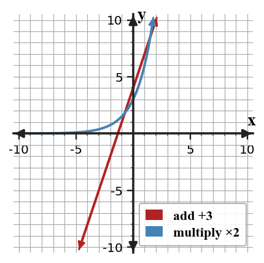
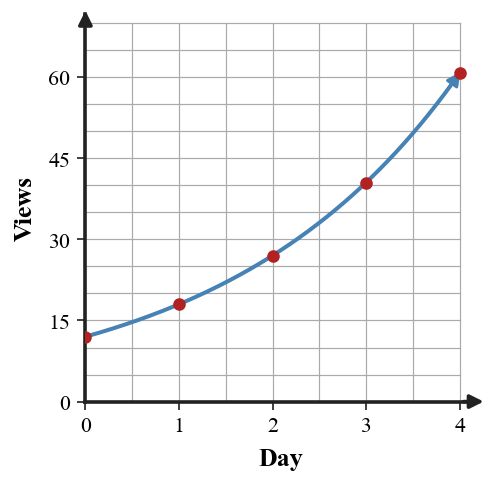

Mathematical idea: Exponential relationships change by multiplying by the same factor again and again.
Today you will compare additive and multiplicative change in sequences, tables, equations, and contexts. You will use ratios, not just visual shape, to justify growth or decay.
Learning Target: Students will identify exponential relationships from patterns, tables, graphs, and situations.
I can statements
This is a long-range preview for future lessons. Do not solve it today. Instead, annotate it individually. Circle anything familiar, underline symbols or directions that seem important, and write notes about what information you think will be needed later.
As you annotate, ask yourself: What parts (words, symbols, graphs) do you KNOW? What parts look FAMILIAR? What parts look like jibberish?
Create two different short situations that both begin with 80 but use different exponential multipliers. One situation must be growth and one must be decay.
Directions
Read the introduction aloud with a partner or in a small group. As you read, annotate the text by highlighting important ideas, circling key vocabulary, and writing short notes about connections, questions, or predictions in the margins.
Many patterns change from one step to the next, but not all change in the same way. When consecutive outputs have the same ratio, the pattern is using repeated multiplication and is a strong candidate for an exponential relationship.
Percent growth and percent decay also use multiplication each time period. A 20% increase means multiply by 1.20, while a 20% decrease means multiply by 0.80, so the multiplier tells whether the pattern grows or decays.
A graph that rises or falls can be helpful, but direction alone does not prove a function family. A table can reveal whether the values are adding the same amount, multiplying by the same factor, or changing in a different way.
In this section, you will use sequences, tables, verbal situations, and equations in the form $y=ab^x$. The value $a$ is the starting amount, and the value $b$ is the multiplier from one step to the next.
Real-world exponential patterns often describe growth such as a population increasing or decay such as an object losing value. The goal is to support your classification with evidence, not just a quick label.
Stop and Discuss
To classify a pattern, compare consecutive outputs with differences and ratios.
| Step | 0 | 1 | 2 | 3 | Evidence |
|---|---|---|---|---|---|
| Linear pattern | 4 | 7 | 10 | 13 | Differences: +3, +3, +3 |
| Exponential pattern | 3 | 6 | 12 | 24 | Ratios: ×2, ×2, ×2 |
The exponential row can be written as $y=3(2)^x$ because the starting value is 3 and the multiplier is 2.

Context: If the output is a number of items, the ratio of 2 means the amount doubles at each equal step.
Each sequence changes at equal steps. Decide what kind of change is happening and name the common difference or ratio when one exists.
Classify each sequence and name the difference or ratio when one exists.
Stop and Discuss
A small website has 240 visitors in week 0. The number of visitors is multiplied by 1.15 each week.
A bike video has 150 views in month 0. Each month, the current number of views is multiplied by 0.8.
Stop and Discuss
To determine whether a table is exponential, divide each output by the previous output and check for the same multiplier.
| Day | 0 | 1 | 2 | 3 | 4 |
|---|---|---|---|---|---|
| Views | 12 | 18 | 27 | 40.5 | 60.75 |
| Ratio | 1.5 | 1.5 | 1.5 | 1.5 |
The constant ratio gives $y=12(1.5)^x$.

Context: A multiplier of 1.5 means each day has 150% as many views as the day before.
The table shows the number of downloads for a new app during the first few hours.
| Hour | 0 | 1 | 2 | 3 | 4 |
|---|---|---|---|---|---|
| Downloads | 60 | 90 | 135 | 202.5 | 303.75 |
The table shows the amount of medicine remaining in a body after each hour.
| Hour | 0 | 1 | 2 | 3 | 4 |
|---|---|---|---|---|---|
| Amount (mg) | 500 | 400 | 320 | 256 | 204.8 |
Stop and Discuss
A student looks at the sequence 8, 16, 32, 64, ... and makes a quick classification.
Student claim: "This sequence is linear because the numbers keep going up."
A student classifies the sequence 200, 150, 112.5, 84.375, ... as linear because each term is smaller than the previous one.
Stop and Discuss
You can recognize exponential growth or decay by looking for repeated multiplication across equal steps.
In an equation like $y=ab^x$, $a$ is the starting value and $b$ is the multiplier; $b\gt1$ means growth and $0\lt b\lt1$ means decay.
A common error is to call any rising graph linear or any falling graph decay without checking ratios.
Strong understanding means you can point to table values, equations, or context words and explain the multiplier that controls the change.
Look back at the future task. Do not solve it yet. Highlight one part that makes more sense now than it did at the beginning. Circle one part that still feels unfamiliar. Write one sentence about what representation you would look at first.
For each sequence, decide whether it shows repeated addition, repeated multiplication, or neither. State the common difference or common ratio when one exists.
A phone app starts with 180 users and the number of users is multiplied by 1.25 each week.
What is one idea about recognizing exponential growth and decay you understand better now than at the start of class? Write at least one complete sentence.
What is one thing about recognizing exponential growth and decay you still want to understand or practice? Be specific — name the idea, not just "everything."